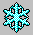

Movement - keys and buttons
-
Family: Group of buttons, related
to the person's own family: spouse and children.
-
Parents: Group of buttons, related
to the parents's family: father, mother, brothers and sisters.
-
Spouse:
Info about spouse.
-
Father:
Info about father.
-
Mother:
Info about mother.
-
Child:
Info about particular chuld, brother or sister.
-
Birth:
Info about person's birth.
-
 Death:
Info about person's death.
-
Note:
General info about person.
-
 KEY:
Click on this button to re-draw the complete Family Map from the person's
perspective. This will reload the browser page, so it can takes some time.
KEY:
Click on this button to re-draw the complete Family Map from the person's
perspective. This will reload the browser page, so it can takes some time.
-
Person:
Indicator of the current key person. You are normally NOT clicking on this
button, because it would hide the whole map. To unhide map - click again
- + Pressing "+" on the keybord would
increase zoom in map.
- - Pressing "-" on the keybord would
increase zoom out map.
- Up, Down, Left, Right, PageUp, PageDown: Navigations keys are not
redefined and can be used as in regular web page. However, they are mentioned
here because screen resolution of the modern monitors are still not even
close to the map printing quality, so in order to keep text readable, you
how to scroll a lot, especially in the horizontal direction. You can find
old-fashioned key navigation more convient then draging scroll-bar pointers.